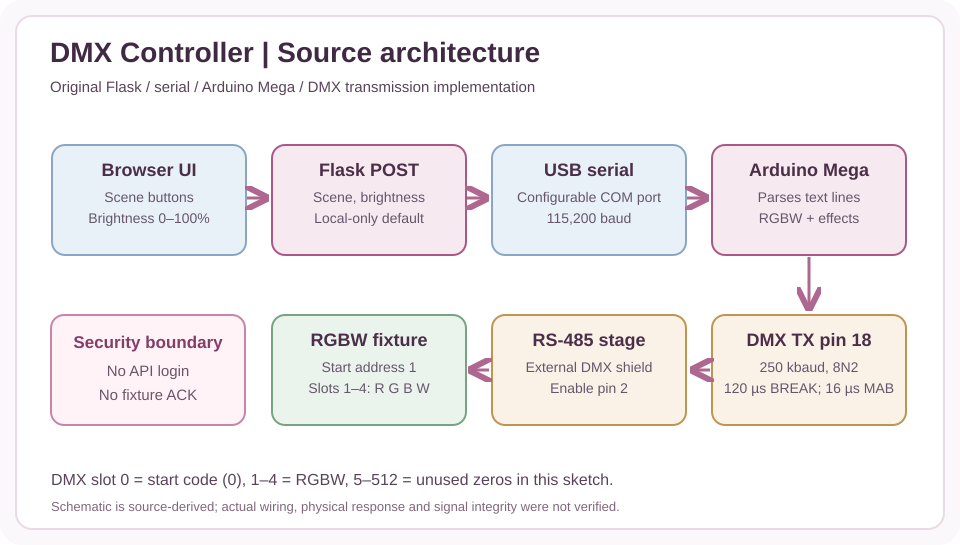
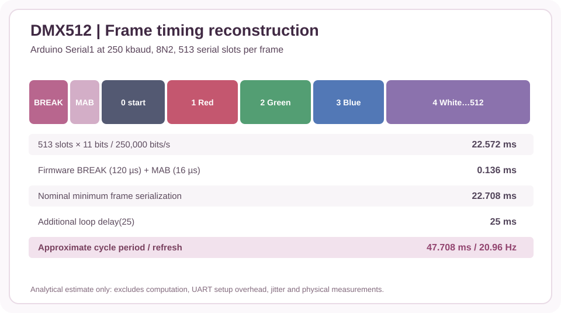
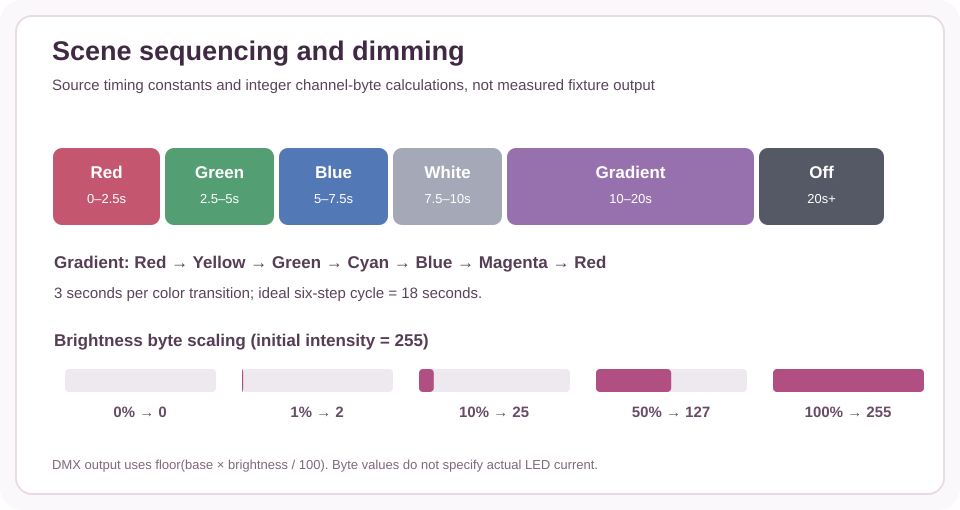

This project brings a familiar browser interface to a hardware lighting-control problem. Choosing a scene or brightness setting produces commands for an Arduino-based DMX system.
Engineering challenge
Translate simple user controls into real output for RGBW lighting hardware.
Methods and approach
Use Flask to receive browser inputs and send serial commands to Arduino for DMX output.
Tools and environment
Python, Flask, Arduino, serial communication, DMX.
Evidence and limitations
This page summarizes the work documented in the portfolio project book. Where underlying test data, design files, or screenshots are not public, the summary does not imply those materials were independently verified.
Recovered lighting-control system
The original Flask interface and Arduino Mega sketch are available in GitHub. The controller sends newline-delimited serial commands at 115,200 baud, and the firmware constructs DMX frames with a zero start code and four RGBW data channels. The original sketch's invalid fconst declaration was corrected; the Flask service now listens on localhost by default. The existing demonstration video is preserved, but physical DMX timing and fixture response have not been retested in this recovery.



Recovered engineering and verification
The source describes seven scene commands, dimming from 0% to 100%, a six-color gradient, and a 20-second nominal demonstration timeline. An independent offline reference model and 13 synthetic tests check the channel assignment, integer dimming, scene sequencing and timing calculations. Arduino compilation, physical signal integrity, luminaire channel mapping and current ratings require a subsequent hardware test. The original HTTP endpoints do not authenticate users, so the recovered app should remain local-only unless explicitly secured.
This page is based on the existing portfolio project description. It distinguishes reported results from targets and does not publish restricted NASA files or unavailable raw data.